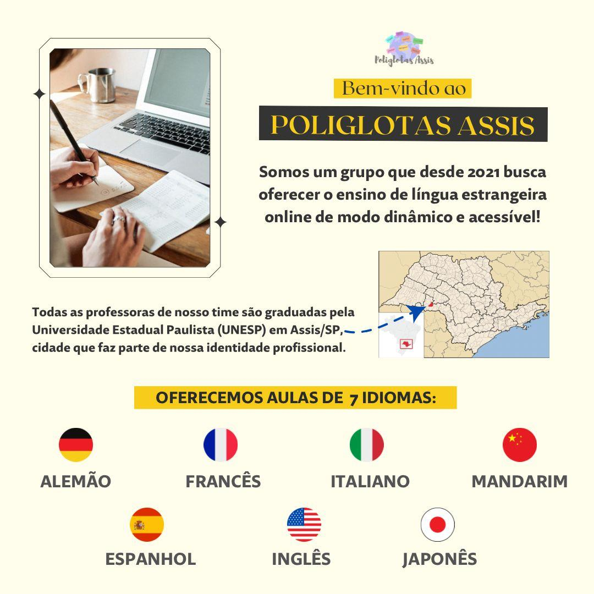
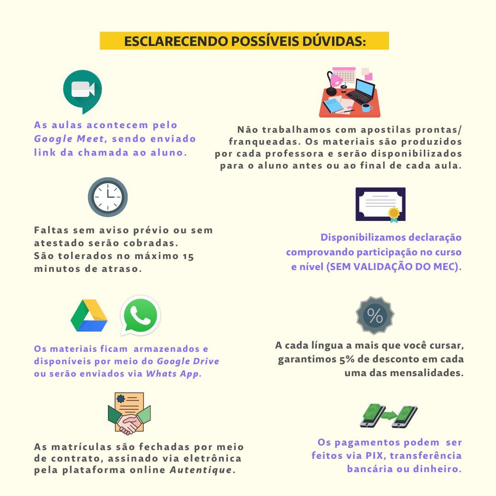
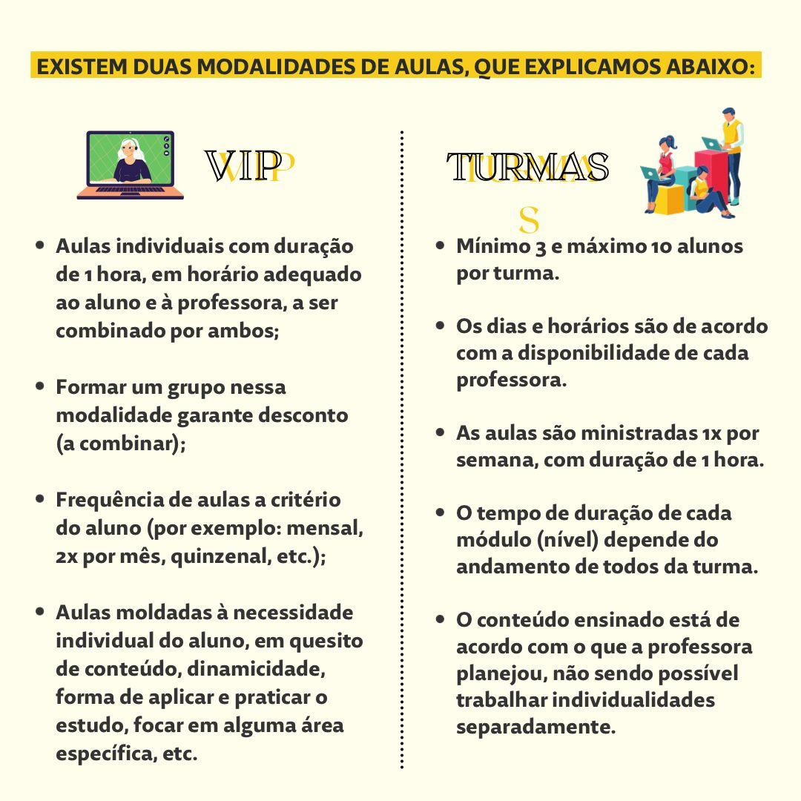
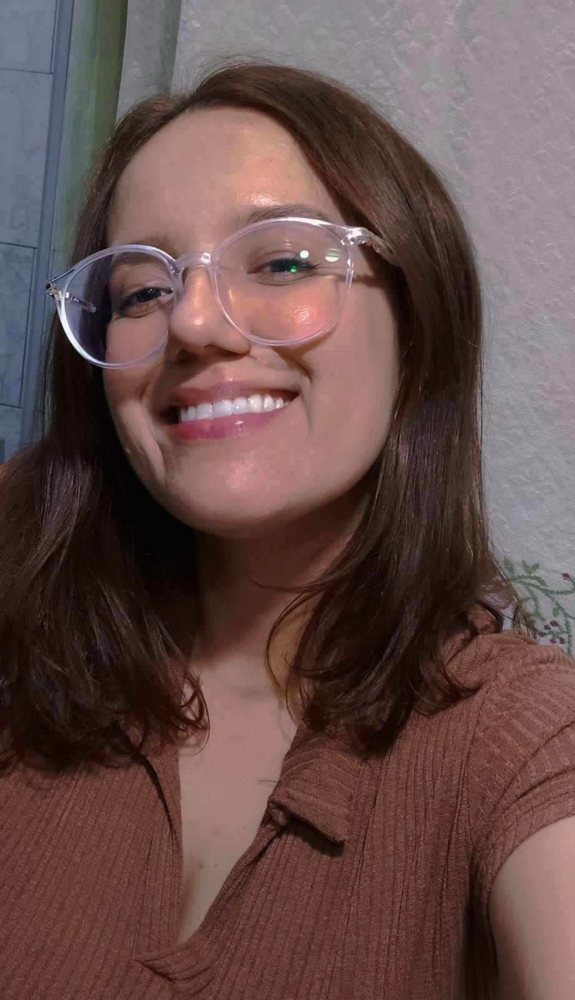
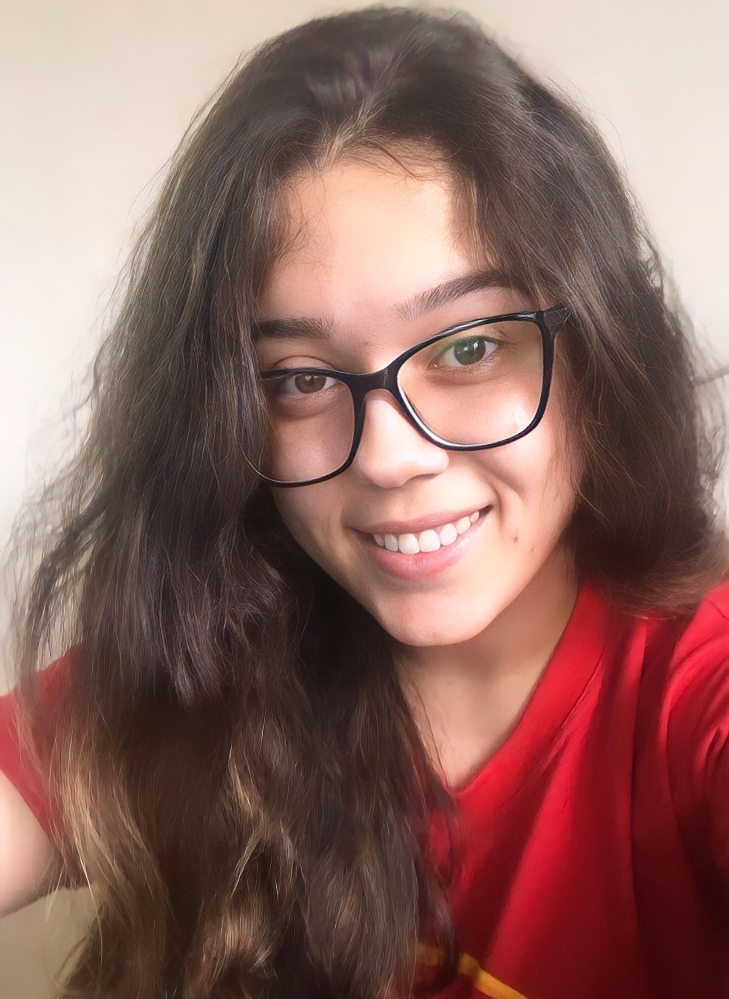

Professoras
1 / 6

大家好 (Dàjiā hǎo)! Oii, gente! Meu nome é Maria Luiza, tenho 22 anos e sou a professora de mandarim do Poliglotas Assis. Sou formada em Letras Português-Japonês pela UNESP, porém, estudei Mandarim no Centro de Línguas da mesma instituição e possuo proficiência na língua (HSK 2). Atualmente, além das aulas de Mandarim, também sou professora de Japonês no Centro de Estudos de Línguas do estado de São Paulo. Então, como vocês devem imaginar, sou completamente apaixonada pela cultura asiática (incluindo animes, kpop, doramas e afins), e foi graças a esse amor pelo oriente que eu conheci o meu noivo, de uma família chinesa, e também fiz duas grandes amigas intercambistas de Wuhan. Será um prazer conhecê-los (las) para podermos compartilhar conhecimento! Por isso, não pensem que é impossível aprender mandarim, saibam que é um idioma muito prático e gramaticalmente simples. Agora, eu espero vocês para que possamos, juntos (as), adentrar a Língua Chinesa e conhecer mais sobre o país que é uma das maiores potências mundiais! 再见大家 (Zàijiàn dàjiā)! Tchauzinho, pessoal!
2 / 6
Aqui é a sensei Bianca Renata dos Santos. Tenho 22 anos e sou formada pelo curso de Letras — Português/Japonês pela UNESP de Assis/SP. Para começar, vou contar um pouquinho da minha trajetória para vocês... Meu sonho de fazer Letras — Português/Japonês na UNESP de Assis vem desde o Ensino Médio, quando comecei a ter maior contato com a cultura pop japonesa. Então, logo após me formar, iniciei meus estudos na universidade em 2018, que fica a 300km da minha cidade natal. Ainda no início do mesmo ano, comecei a estudar a Língua Japonesa no CLDP (Centro de Línguas e Desenvolvimento de Professores). Depois, no segundo semestre, finalmente as aulas de Língua Estrangeira começaram. Em meu penúltimo ano da faculdade, mais especificamente em maio do ano retrasado, fundei um curso de idiomas junto às minhas colegas de profissão, o @poliglotas.assis, no qual oferecemos 7 idiomas: alemão, espanhol, francês, inglês, italiano, japonês e mandarim. Espero que seja uma trajetória proveitosa e linda! Vamos juntos? De sua futura 先生, Bianca Renata dos Santos.
3 / 6
Bonjour à tous ! Me chamo Giovana, tenho 25 anos e sou formada em Letras-Português/Francês pela UNESP de Assis. Desde o primeiro ano de licenciatura atuo como professora em cursinhos pré-vestibulares, e com o início da pandemia, comecei a ministrar meu próprio curso de Francês, no Poliglotas Assis, grupo de línguas estrangeiras que fundei em conjunto com mais cinco colegas de trabalho. Aprender francês, hoje em dia, aumenta suas oportunidades no mercado de trabalho, tanto em território nacional, como internacional. Até então, já formei vários alunos em língua francesa, desde o nível básico até ao nível avançado. Espero que juntos possamos trilhar um caminho no aprendizado de língua francesa. On y va ? Je vous attends !
4 / 6

Hallo! Wie geht’s? Me chamo Camilla Damascena e sou a Lehrerin de Alemão no Poliglotas Assis. Tenho 27 anos e sou formada professora desde 2018; cursei Letras na UNESP (campus Assis/SP) e também cursei Pedagogia pela UniCesumar. Me encontrei no caminho da Educação e me sinto realizada com as muitas vivências que isso me permite. Não sou de família alemã, mas vi nessa língua um novo e interessante desafio, do qual continuo amando até hoje; sou fascinada pela pronúncia e pelas muitas outras particularidades da língua alemã e tenho certeza que quem se permite ir além da crença que é uma “língua impossível” também se encanta, além das grandes vantagens que um idioma diferente pode trazer para o futuro profissional, né? Estou à disposição para te ajudar nessa jornada. Los geht’s! Tschüss!
5 / 6

¡Hola, cariños! ¿Qué tal? Aqui é a maestra Yasmin Dionisio Paes. Tenho 24 aninhos e vivo com meu companheiro espanhol há mais de dez anos. Estudei no Centro de Línguas da minha cidade e consegui um intercâmbio para Espanha, motivo pelo qual tive certeza que seria professora, por isso me formei em Letras pela UNESP de Assis/SP (minha cidade natal) e sou pedagoga pela UNOPAR. Dar aula e ensinar esse idioma tão rico em possibilidades culturais e profissionais é o que me motiva em meu dia a dia! E como é bom ver o processo de cada aluno ao conseguir se comunicar. Minha maior realização profissional é despertar no outro o amor pela Língua Espanhola e pelo aprender. Mas, e aí, vamos juntos? Será un placer tenerte como mi alumno. ¡Besitos!
6 / 6